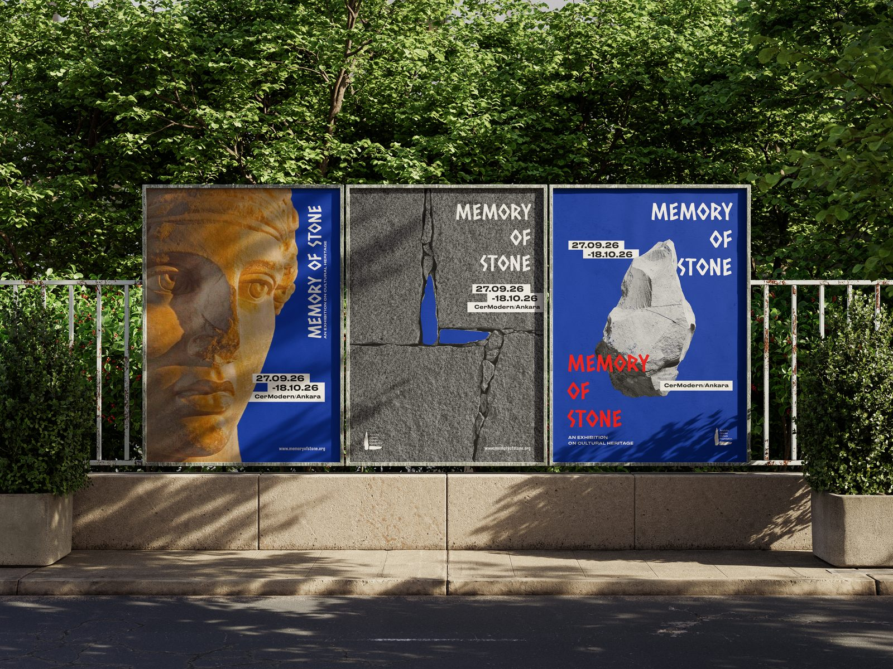
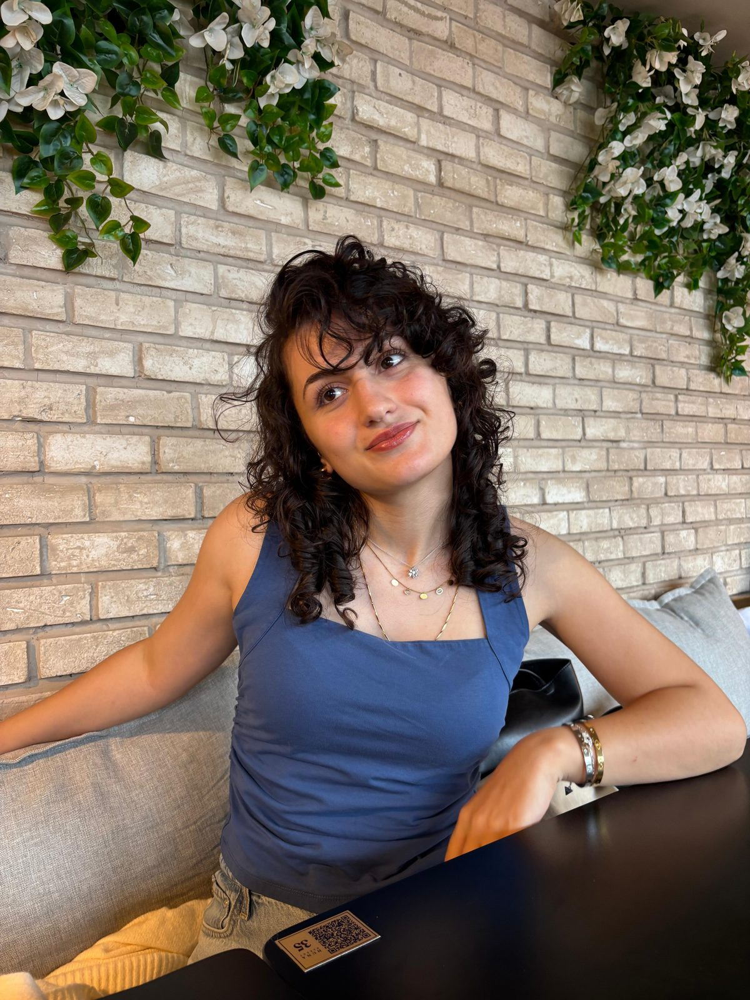
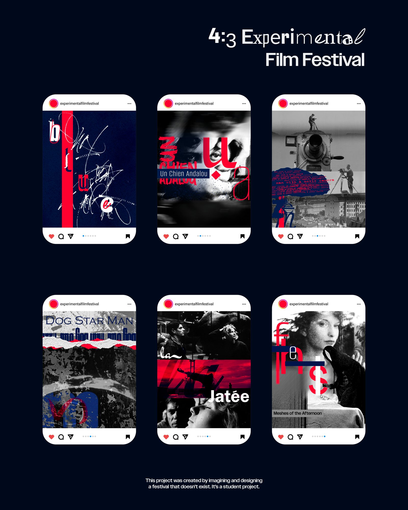
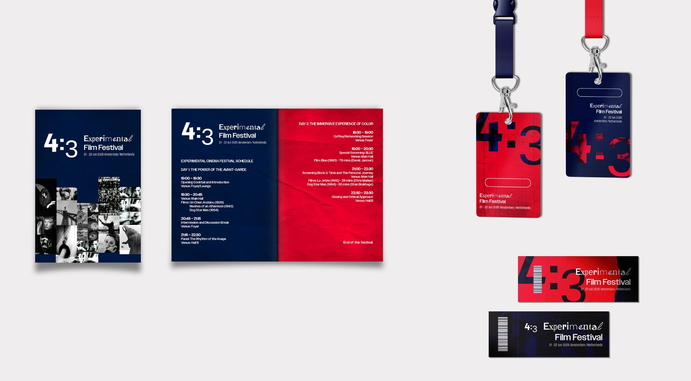
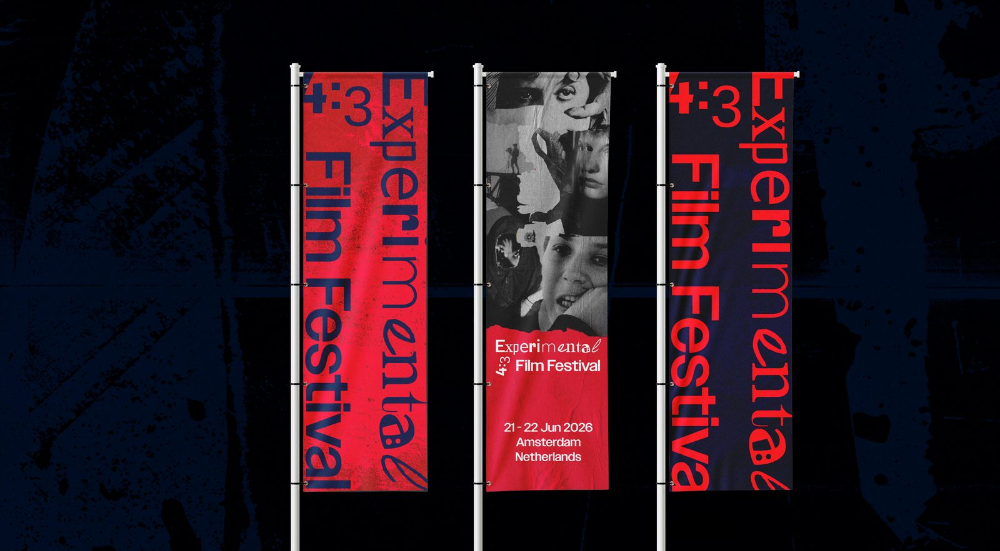
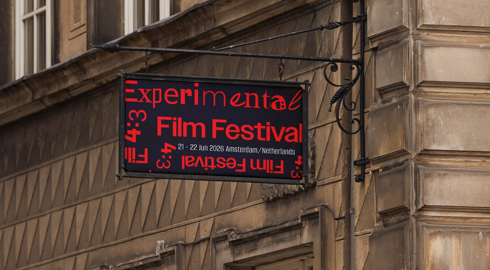

MEMORY OF STONE



I am Özlem Şeker, a Visual Communication Design student at TOBB ETÜ. My work spans visual identity, editorial design, poster art, and social media — always balancing aesthetic power with purposeful function.
VIEW WORK







As a fourth-year Visual Communication Design student at TOBB ETÜ, I transform theoretical knowledge into practical and strategic visual solutions. With a portfolio that includes festival identities, editorial design, posters, and social media campaigns, my goal is to add tangible value to the projects I work on by creating user-centric designs that combine aesthetic power with functionality.
Creative Thinking · Team Work · Concept Development · User Empathy
English (B1) · Romeika (C1) · Italian (A1)